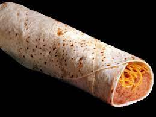

Breakfast Burrito

Ingredients
Tortillas
Refried Beans
Salsa
Cheese
Chili Powder, Garlic Powder, Cumin
How to create
Season Beans: Add refried beans, salsa, chili powder, garlic powder, and cumin to a mixing bowl and stir until smooth. A bowl of refried beans with salsa and seasoning on top to add more flavor. Spread Beans: Spoon about three tablespoons of the bean mixture onto the center of a flour tortilla and smooth into a thin layer. Someone spooning refried beans on a tortilla for homemade Bean and Cheese Burritos. Add Cheese and Roll: Sprinkle with a large pinch of shredded cheese. Roll tightly. Repeat with remaining tortillas. A Mexican cheese blend being spread on top of a tortilla with beans on it to make crispy bean and cheese burritos. Fry Burritos: Heat 1-2 tablespoons of oil in a large saucepan over medium-high heat. Place a few burritos, seam side down, into the pan. Turn them every 30 seconds or so as they cook until they are golden and crispy on all sides. Two bean and cheese burritos being fried in a little oil in a pan to make it crispy. Serve warm with homemade Easy Homemade Salsa and guacamole, for dipping.s